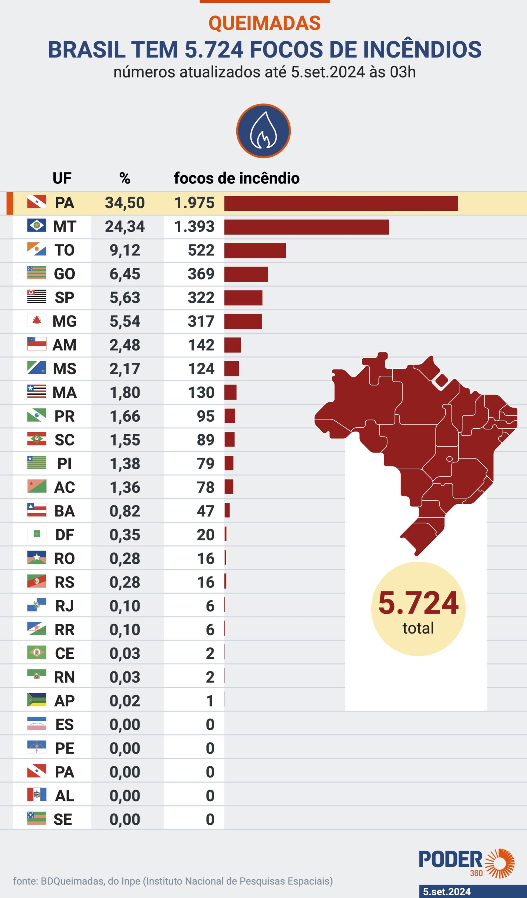

Queimadas no Brasil: Um Desafio Ambiental
As queimadas representam um grave problema ambiental no Brasil. Anualmente, vastas áreas de vegetação, principalmente na Amazônia e no Cerrado, são consumidas pelo fogo, causando impactos devastadores para o meio ambiente, a economia e a saúde da população.
É fundamental que todos se unam para combater esse problema, buscando soluções sustentáveis e a longo prazo.
Área Queimada
O programa de Monitoramento de Queimadas/Incêndios Florestais do INPE é realizado operacionalmente desde 1998, com o objetivo de "monitorar a cobertura da terra e o impacto do fogo com o uso de imagens de satélites, para apoiar as ações de gestão ambiental e controlar o desmatamento, queimadas e incêndios florestais".
